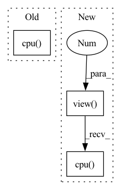

Pattern ID :41632
Before Change
preds = model(input)
// preds =preds.argmax(dim=2) //找出概率最大的那个字符
// print(preds)
preds=preds.view(-1).detach().cpu() .numpy()
newPreds=decodePlate(preds)
plate=""
for i in newPreds:After Change
prob,index=preds.max(dim=-1)
index = index.view(-1).detach().cpu().numpy()
prob=prob.view(-1).detach().cpu() .numpy()
// preds=preds.view(-1).detach().cpu().numpy()In pattern: SUPERPATTERN
Frequency: 3
Non-data size: 3
Instances Fragment ID: 116928955
Project Name: we0091234/chinese_license_plate_detection_recognition
Commit Name: f11e92224ba0b3ba752ddbae1df2532532173cfd
Time: 2022-12-08
Author: 447587096@qq.com
File Name: plate_recognition/plate_rec.py
M Class Name: AnonimousClass
N Class Name: AnonimousClass
M Method Name: get_plate_result(3)
N Method Name: get_plate_result(3)
M Parent Class:
N Parent Class:
M File Name: plate_recognition/plate_rec.py
N File Name: plate_recognition/plate_rec.py
M Start Line: 50
M End Line: 60
N Start Line: 52
N End Line: 68
Before Change
bpr = (best > 1. / thr).float().mean() // best possible recall
return bpr, aat
anchors = m.anchor_grid.clone().cpu() .view(-1, 2) // current anchors
bpr, aat = metric(anchors)
print(f"anchors/target = {aat:.2f}, Best Possible Recall (BPR) = {bpr:.4f}", end="")
if bpr < 0.98: // threshold to recomputeAfter Change
bpr = (best > 1. / thr).float().mean() // best possible recall
return bpr, aat
anchors = m.anchors.clone() * m.stride.to(m.anchors.device).view( -1, 1 , 1) // current anchors
bpr, aat = metric(anchors.cpu() .view(-1, 2))
print(f"anchors/target = {aat:.2f}, Best Possible Recall (BPR) = {bpr:.4f}", end="")
if bpr < 0.98: // threshold to recompute
print(". Attempting to improve anchors, please wait...") Fragment ID: 116928958
Project Name: ultralytics/yolov5
Commit Name: 9d75e42f9811718a1f5a821f2425484524df074f
Time: 2021-10-11
Author: njebastin10@gmail.com
File Name: utils/autoanchor.py
M Class Name: AnonimousClass
N Class Name: AnonimousClass
M Method Name: check_anchors(4)
N Method Name: check_anchors(4)
M Parent Class:
N Parent Class:
M File Name: utils/autoanchor.py
N File Name: utils/autoanchor.py
M Start Line: 31
M End Line: 57
N Start Line: 30
N End Line: 44
Before Change
with torch.no_grad():
state = torch.tensor(state).unsqueeze(0).float().to(get_device())
action = self.sample_action_from_distribution(state, deterministic=deterministic, return_log_prob=False)
return action.cpu() .numpy()[0] // no need to detach first because we are not using reparametrization trick
def polyak_update(self, old_net: nn.Module, new_net: nn.Module) -> None:
for old_param, new_param in zip(old_net.parameters(), new_net.parameters()):After Change
with torch.no_grad():
state = torch.tensor(state).unsqueeze(0).float().to(get_device())
action = self.sample_action_from_distribution(state, deterministic=deterministic, return_log_prob=False)
return action.view(-1).cpu() .numpy() // view as 1d -> to cpu -> to numpy
def polyak_update(self, old_net: nn.Module, new_net: nn.Module) -> None:
for old_param, new_param in zip(old_net.parameters(), new_net.parameters()): Fragment ID: 116928962
Project Name: zhihanyang2022/off-policy-continuous-control
Commit Name: c768d339b1d0127f519ff3eb9b36d45c3eba0fd0
Time: 2021-05-16
Author: yangz2@carleton.edu
File Name: library/algorithms/sac.py
M Class Name: SAC
N Class Name: SAC
M Method Name: act(3)
N Method Name: act(3)
M Parent Class: OffPolicyRLAlgorithm
N Parent Class: OffPolicyRLAlgorithm
M File Name: library/algorithms/sac.py
N File Name: library/algorithms/sac.py
M Start Line: 89
M End Line: 90
N Start Line: 99
N End Line: 100